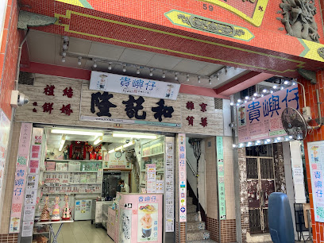
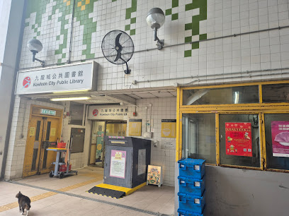
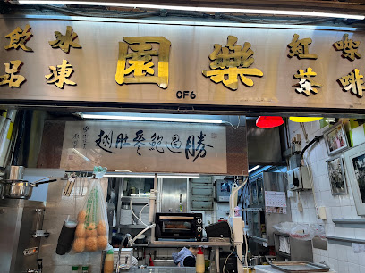
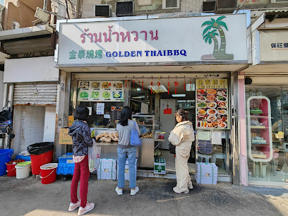
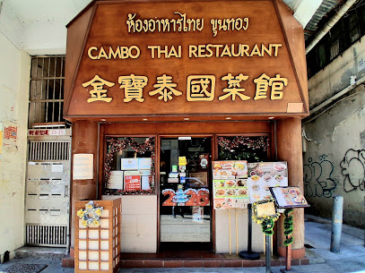
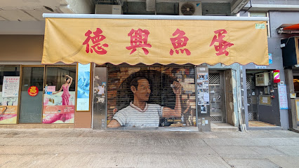
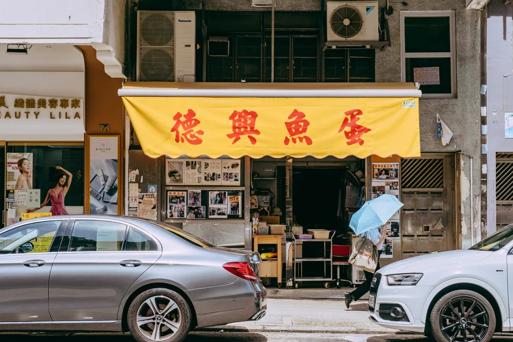
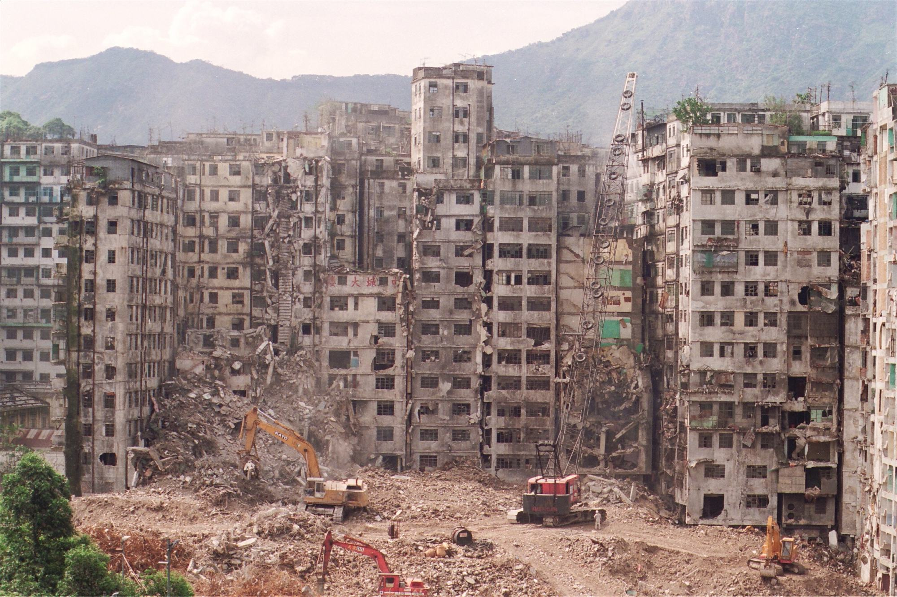

Kowloon:
the myth:The Walled City of Kowloon
Introduction
About this WebsiteTravel Guide
Kowloon Walled City Park Kowloon Walled City Exhibition Nearby Food Spots(1) Nearby Food Spots(2) Kowloon City attractions Derivative Artworksothers
Contact Us
Kowloon Walled City Park and Nearby Food Spots(2)
Table of contents
Kowloon City Market

| Address | Kowloon City Municipal Services Building, 100 Nga Tsin Wai Road, Kowloon City | |
| Opening hours | 06:00–20:00 | |
| How to get there | MTR Sung Wong Toi Station Exit B3; buses 101, 107, 213D, 42, 85, 85X, 2D, 10, 25A, 25B, 25M |
Lok Yuen Tea Stall

Located in the Kowloon City cooked‑food centre, Lok Yuen is a long‑standing Hong Kong tea stall with a calligraphy piece by Chua Lam praising it. Diners flock here for the satay beef French toast—crispy bread filled with satay beef, topped with butter and condensed milk for a salty‑sweet treat. Other favourites include Ovaltine French toast, satay beef noodles, milk tea, and red bean ice.
| Address | Shop 6, 3/F, Kowloon City Municipal Services Building, 100 Nga Tsin Wai Road | |
| Opening hours | Mon–Fri 07:15–15:15; Sat & public holidays 07:15–13:00; closed Sundays | |
| How to get there | MTR Sung Wong Toi Station Exit B3, about 3 minutes on foot |
Kam Tai Barbecue Skewers

Kam Tai has stood in Kowloon City for over 20 years with two branches: a dine‑in Kam Tai Barbecue and a takeaway Kam Tai Shaved Ice. The shop specializes in Thai‑style skewers—chicken wings, pork neck, and sausages are popular—served with the house satay sauce and a tangy chili dip. They also offer tom yum seafood hor fun, pineapple fried rice, and curry clams, all receiving consistently positive reviews.
| Address | G/F, 386A–B Prince Edward Road West, Kowloon City | |
| Opening hours | 12:00–23:00 | |
| How to get there | MTR Sung Wong Toi Station Exit B2, about 3 minutes on foot |
Cambo Thai Restaurant

Cambo Thai opened in 1991 and is one of the earlier Thai restaurants in Kowloon City, long favoured by celebrities and food lovers; at its peak it had five branches. The restaurant focuses on seafood with signature dishes such as chili‑paste clams, raw prawns sashimi, stuffed prawn balls, tom yum, pineapple fried rice, Thai‑style rice noodles, and stir‑fried water spinach with belacan. The stuffed prawn balls are a must‑order: golden, bursting with filling, and pleasantly springy.
| Address | G/F, 25 Nga Tsin Long Road, Kowloon City | |
| Opening hours | 11:30–23:00 | |
| How to get there | MTR Sung Wong Toi Station Exit B2, about 2 minutes on foot |
Kui Yat Kee Teochew Bakery
Kui Yat Kee is one of Hong Kong’s most comprehensive Teochew pastry shops, operating for over 75 years. Founded in 1948 and relocated to Kowloon City in 1969, the bakery sells nearly a hundred kinds of Teochew sweets and pastries—sugar cakes, lotus‑seed pastries, peach cakes, and festival specialties like caramelized rice cake and candied lotus root. Traditional items such as white‑skin mung bean pastry, rice‑paste sweets, and various ceremonial cakes are staples for Teochew rituals and festivals.
| Address | G/F, 59 Sing Nam Road, Kowloon City | |
| Opening hours | 10:00–19:00 | |
| How to get there | MTR Sung Wong Toi Station Exit B3, about 4 minutes on foot |
Tak Hing Fishball Company and Tak Cheong Fishball Noodle

Declining catches, rising rents, and large imports of cheap fishballs from mainland China have made Hong
Kong’s handmade fishball craft rare. Tak Hing Fishball is a long‑standing Kowloon City shop; press
features note the owner Ping’s family are Chaozhou and opened the shop in the 1980s.

Historically, fresh fish such as golden‑thread fish, nine‑stick fish, and yellow eel sold poorly at stalls and were turned into fishballs, which became unexpectedly popular. Production involves deboning, skinning, and gutting the fish, separating meat from bones, then making fish paste with ice to preserve freshness. Hand‑beating fishballs must be done at low temperature; makers endure freezing hands, quickly shape the paste into balls, then dip them in warm water to set.
Tak Hing is a takeaway shop plastered with press clippings, so the work area is not obvious and tourists can easily miss it. It mainly sells uncooked hand‑beaten fishballs, frozen dumplings, and other ball products for local residents. If you want ready‑to‑eat portions, tell the owner—different portion sizes are available. The curry fishballs have a spicy kick, and freshly fried fish skin is offered.
| Address | 76 Fuk Lo Tsun Road, Kowloon City, Hong Kong | |
| Opening hours | 09:00–18:00 | |
| How to get there | MTR Sung Wong Toi Station — Exit B3, walk ~4 minutes |
| Address | Shop G/F, Ka Fook Court, 88 Fuk Lo Tsun Road, Kowloon City | |
| Opening hours | 07:00–00:00 | |
| How to get there | MTR Sung Wong Toi Station — Exit B3, walk ~6 minutes |
Related content


